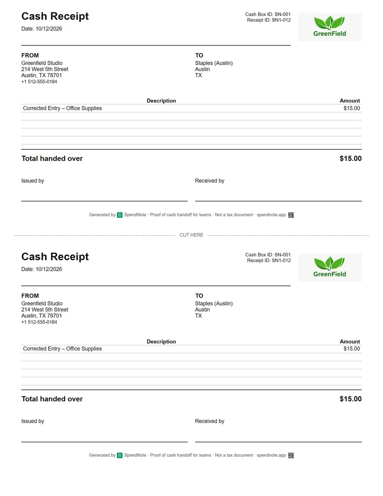
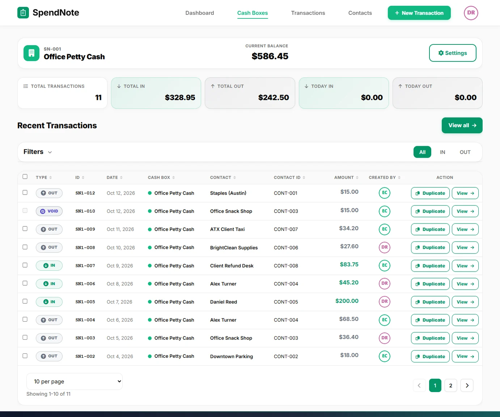
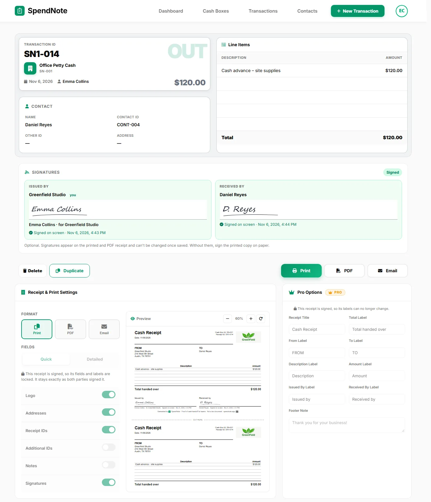
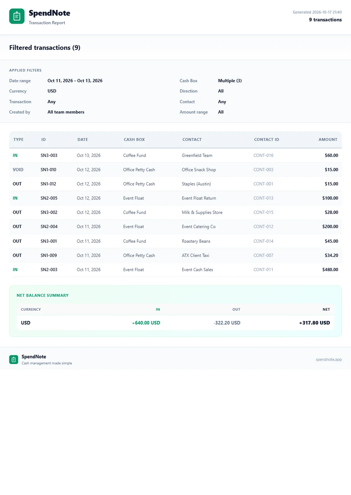

Digital Receipt Book: Replace Your Paper Receipt Book
The carbon receipt pad, the Excel sheet, the old Access database: replace them with one place where every cash receipt is written, printed in two copies and found again in seconds.

Make a cash receipt right now
Fill in the fields, then print two copies or save it as a PDF. Free, no account, nothing to install.
Why Paper Receipt Books Fall Short
A paper receipt book does one thing: it creates a handwritten carbon copy. For decades, that was enough. But the moment you need to find a receipt from three months ago, prove what was paid to whom, or share a copy with someone who isn't standing in front of you — the paper book fails.
Lost or Damaged
Paper gets wet, torn, or misplaced. A receipt book left on a job site or in a drawer is useless when you need the record. Once it's gone, the proof is gone.
Unsearchable
Need to find every receipt issued to a specific person? With a paper book, you flip through every page. With a digital receipt book, you search by name, date, or amount in seconds.
No Remote Access
The receipt book lives in one physical location. If you're not there, you can't issue a receipt or look one up. A digital system works from anywhere.
No Audit Trail
Paper receipts don't record who wrote them, can be altered after the fact, and don't connect to a running balance. When the auditor asks questions, paper raises more than it answers.
How a Digital Receipt Book Works
Every time cash changes hands, you log it. The system generates a formatted receipt automatically — with date, amount, who gave, who received, and a description. That receipt is stored, searchable, and re-printable forever — your whole receipt book becomes one place you can filter and look up in seconds.

- Instant generation — receipt created the moment you save the transaction
- Printable two-copy format — one for you, one for the recipient, on one page
- Email delivery (Pro) — send the receipt with the signed PDF directly to the other party
- PDF download — save to your files or attach to records
- Full history — every receipt stored and searchable by contact, date, or amount

Open Your Digital Receipt Book
Start logging cash receipts today — search, filter, resend or reprint any of them anytime. 14 days free, no credit card.
Open Digital Receipt BookReceipt Book in Access or Excel vs. a Digital Receipt Book
Plenty of small businesses already moved off the paper receipt notepad, just not very far. The usual setups:
- A paper receipt book or check receipt book from the office store, with carbon copies. Fast to write, impossible to search, and the stub book lives in one drawer.
- An Excel sheet. One owner on a business forum described it well: all receipts shoved in the tin, amounts typed into a spreadsheet with the amount carried over, expenditures and balance, one sheet per month. It works until someone types over a formula or the sheet lives on one laptop.
- A receipt book database in Microsoft Access. Someone built it years ago, it only runs on one PC, and nobody dares change it.
A digital receipt book keeps what those setups do well and drops the weak spots:
| Paper / Excel / Access | Digital receipt book | |
|---|---|---|
| Receipt for the other person | Carbon copy, or none at all from Excel and Access | Two copies on one page, or a PDF |
| Signatures | On paper only | On screen at handoff, or on the printed copy |
| Finding an old receipt | Flip pages or scroll a sheet | Search by name, date or amount |
| Running balance | By hand or by formula | Calculated for every cash box |
| Who wrote it | Handwriting, or not recorded | Every entry shows who logged it |
| Where it works | One drawer, one file, one PC | Any phone or computer with a browser |
You can keep the old book or file as an archive; you don’t need to import it. Start the digital receipt book from today’s balance.
What Every Digital Receipt Includes
Each receipt generated by SpendNote includes everything a cash receipt should have:
- Date and time — automatically recorded
- Amount — exact, in your selected currency
- Direction — IN (cash received) or OUT (cash paid out)
- Contact name — who the cash went to or came from
- Description — what the payment was for
- Cash box name — which cash box the transaction belongs to
- Issued by — the user who recorded the transaction
From Paper Book to Digital in Minutes
Step 1: Sign up and start the 14-day trial. You get a default cash box immediately.
Step 2: Set your current cash balance. This is where your paper receipt book balance stands right now.
Step 3: Start logging transactions. Every entry generates a receipt: sign on screen at handoff, or print and sign on paper, or download a PDF — just like your paper book, but searchable and permanent.
You don't need to transfer old receipts. Keep your paper book as an archive. From this point forward, every new receipt lives in your digital receipt book.

If you're currently tracking cash in a spreadsheet, see how a dedicated app compares to Excel.
Important: SpendNote generates internal cash handoff documentation and receipts. It does not produce tax invoices, official accounting documents, or sales receipts. The receipts document that cash changed hands — your accounting software handles the rest.
Frequently Asked Questions
What is a digital receipt book?
A digital receipt book is a software tool that replaces paper carbonless receipt books. Instead of writing receipts by hand and tearing off carbon copies, you enter the transaction details and the system generates a formatted receipt you can print or save as PDF.
Is a digital receipt valid proof?
A SpendNote receipt is internal documentation that cash changed hands: who, how much, when and what for, signed by both sides. It is not a tax invoice or an official accounting document. If you need a receipt for tax purposes, check your local requirements.
Can I still print receipts from a digital receipt book?
Yes. SpendNote generates receipts in a printable format with two copies on one page — one for you, one for the recipient. You can also download it as a PDF, or email it on the Pro plan.
How is a digital receipt book different from a receipt generator?
A receipt generator creates individual receipts. A digital receipt book stores all your receipts in one searchable history — every receipt is linked to a transaction, a contact, and a cash box. You can filter, search, re-send, or re-print any receipt at any time.
Does the free receipt maker on this page save my receipts?
No. The free receipt maker prints or saves one receipt at a time. What you type is not sent to us; only your last draft is remembered, in your own browser. The searchable history, running balance and on-screen signatures come with a SpendNote account.
Can I keep my receipt book in Excel or Access instead?
You can, and many small businesses do. The weak spots are that neither gives the other person a receipt copy, formulas and files break, and the file usually lives on one computer. A digital receipt book gives both sides a copy and works from any device.
Related Pages for Different Cash-Receipt Needs
This page is about the long-term archive of every cash receipt — search, filter, resend, history. If your real question is different, here's where to go next:
- You need to document a single cash handoff between two people (shift change, team transfer, volunteer handoff) → see cash handoff receipt.
- You're a small business and you need a cash receipt tool for customer or supplier payments → see small business cash receipt tool.
- You want a branded custom receipt with your logo → see custom cash receipt with logo.
Try everything. Pay nothing for 14 days.
Then, if you love it
- Unlimited receipts, 2 cash boxes
- Sign on screen or on paper
- Your logo on every receipt
- Print, PDF & CSV export
- Daily cash report with cash count
Every cash handoff, recorded and signed.
Set up in two minutes. First receipt in thirty seconds. Every entry saved and searchable.
Start my free trial